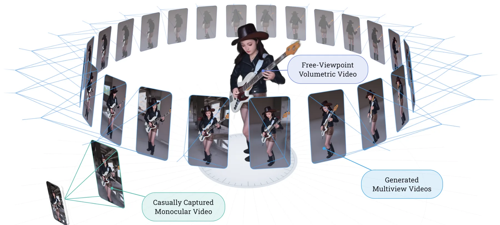
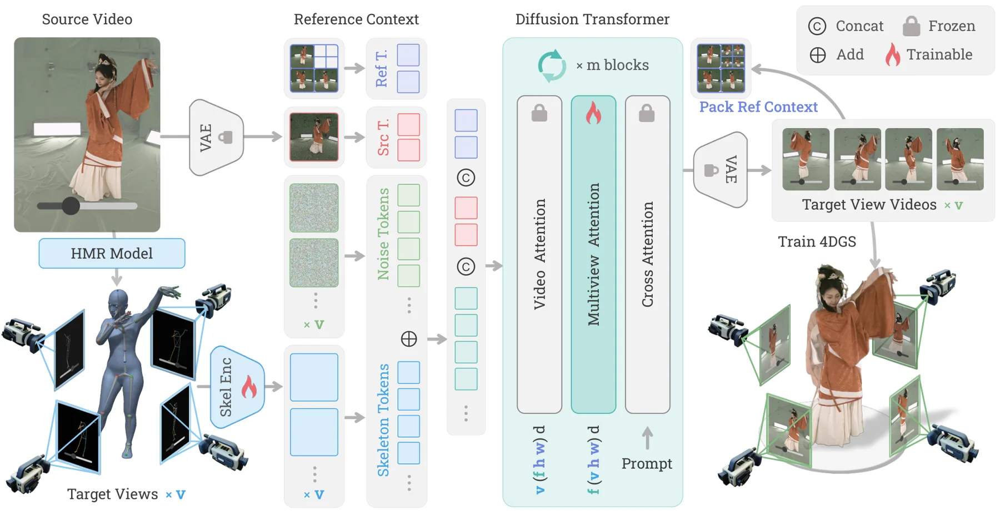
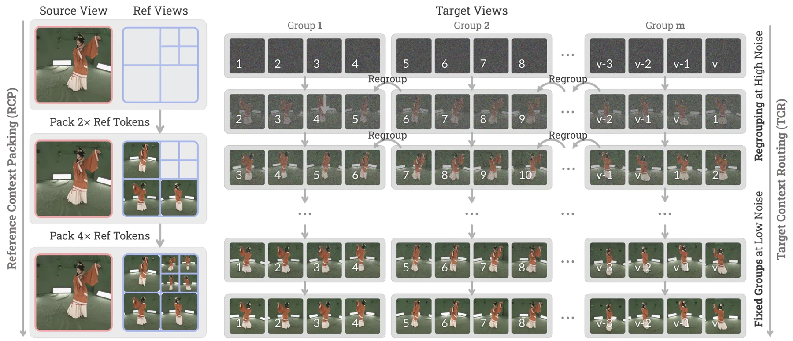
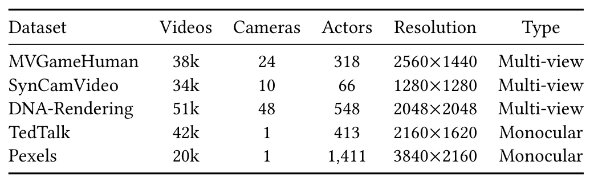
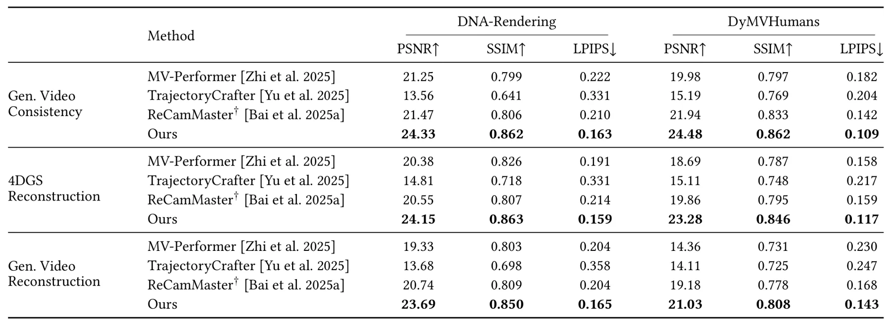
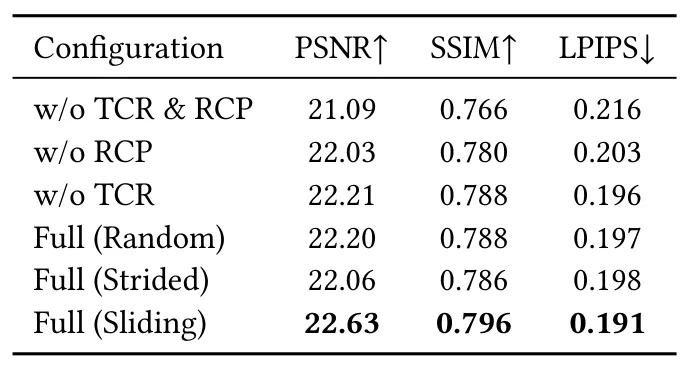

4DAnyone：从随手拍单目视频创建任意人物的 4D 表示4DAnyone: Create Anyone in 4D from a Casual Monocular Video
涉及单目到多视图、动态 4DGS 和跨视图一致性，对生成式三维重建有启发；但聚焦人物内容和生成质量，尚非通用 SLAM 或 metric 4D 建图方案。
一句话工作总结
通过参考上下文压缩和目标视图路由，从未标定单目视频生成多视图一致视频并重建动态人物 4DGS。
摘要
4DAnyone 从未标定单目视频出发，先生成适合重建的多视图一致视频，再将其提升为 4D Gaussian Splatting。方法针对目标视图数量超过单次 DiT 上下文容量时出现的跨视图一致性问题，提出固定长度的 Reference Context Packing 和在去噪阶段轮换目标分组的 Target Context Routing，并结合 MVGameHuman、light-stage 与真实视频数据训练。作者在 DNA-Rendering 和 DyMVHumans 上报告了新视图视频质量与下游 4DGS 重建改进。
We present 4DAnyone, a framework for reconstructing 4D humans from an uncalibrated monocular video by generating reconstruction-grade multiview-consistent videos and lifting them into 4D Gaussian Splatting (4DGS). Existing camera-controlled video diffusion models synthesize plausible novel-view videos but fail to maintain consistency when scaled to the tens of target views required for 4DGS reconstruction. We identify this failure as a bounded-attention-context problem: when target views exceed the capacity of a single DiT forward pass, they must be split into groups, exposing two coupled bottlenecks. On the reference-context side, conditioning on all previously generated views grows as $O(N)$, weakening cross-view appearance guidance. On the target-context side, disjoint groups cannot directly exchange information, causing global structural drift. 4DAnyone addresses both bottlenecks with two complementary designs: Reference Context Packing (RCP) compresses growing reference views into a fixed-length mixed-resolution context with $O(1)$ reference-context complexity, while Target Context Routing (TCR) rotates target-view groupings during denoising to share context across groups at high-noise steps and stabilize details at low-noise steps. We further build the MVGameHuman dataset using our in-house game engine and combine it with light-stage and in-the-wild video datasets for training. Experiments on DNA-Rendering and DyMVHumans show that 4DAnyone outperforms prior methods in both novel-view video quality and downstream 4DGS reconstruction, with robust in-the-wild generalization. See our project page for video results and source code: https://4danyone.github.io.
中文解读摘录
- 论文：arXiv:2608.20335 · PDF · 项目页
- 作者：Yudong Jin, Tao Xie, Qihang Zhang, Zehong Shen, Zhen Xu, Yujun Shen, Hujun Bao, Xiaowei Zhou
- 核心方法：先生成面向重建的多视图一致视频，再提升为 4DGS；Reference Context Packing 将不断增长的参考视图压缩到固定长度上下文，Target Context Routing 则在去噪阶段轮换目标视图分组以交换信息。
- 判断：对单目到多视图、动态 4DGS 和上下文受限的跨视图一致性有启发，但内容聚焦人物生成和视觉质量，不能直接等同于通用 metric 4D 建图或 SLAM。
- 评分：5.8/10。
图表/页面预览
{kind=link}

{kind=link}

{kind=link}

{kind=link}

{kind=link}

{kind=link}
